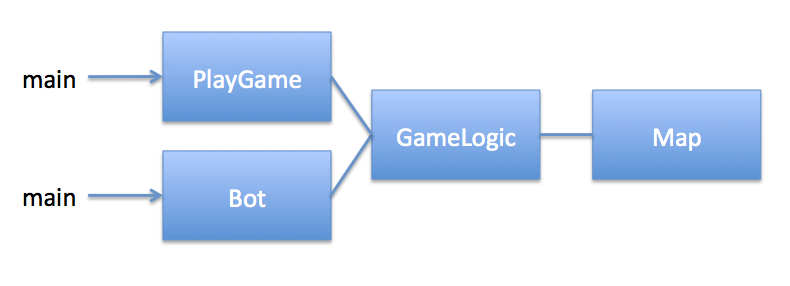

CM10228
/ Programming Ib: Assignment
1 (2013)
Exploring the Dungeon of
Dooom
Assignment Date: Tuesday, 12
February Due date:
Friday, 1 March
at 11:00 PM
This assignment is the first of three you will have in this unit.
Your mark in Programming Ib is composed of 50% coursework, 50%
exam. This assignment is worth 15% of
your final mark for the unit. The assignments are:
Courseworks
|
|
Mark
|
Handed Out
|
Due
|
1
|
Dungeon of Dooom:
Exploring the Dungeon |
15%
|
12th February
|
1 March
|
2
|
Dungeon of Dooom:
Networking and multiple concurrent agents in one dungeon |
10%
|
5 March
|
15 March
Demoed in lab 18-22 March
|
3
|
Dungeon of Dooom:
GUIs to show your friends & family |
25%
|
19 March
|
19 April
Demoed in lab 22-26 April
|
|
Exam
|
50%
|
May
|
|
Objectives
This assignment will introduce you to the Dungeon
of Dooom, the game environment for most of this year's
coursework. The first coursework emphasises reading and
writing to streams and manipulating memory and data structures.
The game takes place in a two-dimensional space (a dungeon). The
objective of the game is to gather a set amount of gold, and then
find the exit of the dungeon. The rules of the game that you will
need to follow (along with this coursework spec) can be found here. When there are multiple
players, it becomes a bit more complicated, but for Coursework 1
the objectives are relatively simple.
This coursework has the following code objectives:
- We have provided you with some sample ASCII-art maps. You will
need to read a map like one of these in from a file &
convert them into a two-dimensional array suitable for game play
(int[][] or char[][]).
- Simple
map
- More
complicated map
- You will need to create a command-line interface that allows a
user to control a player in the game using the commands provided
in the description document.
- You will need to create a bot that can play the game for you.
The bot is not allowed to use the map that the game has, but,
like you, should only `look' at the information the game engine
gives it. Note that the bot does not need to be very smart
in order for you to pass -- it just needs to be able to wander
around the dungeon until it has gathered enough gold, then to
wander around the dungeon until it finds the exit, then exit.
Your code must run from the command line:
this is how we will be marking it. We want to know that you
can compile your code on your own, and that you know what the main
function of your program is. The code should be platform and
operating-system independent. It should run in Java 1.6. To be safe, you should probably
test that your code works on one of the BUCS servers (At time
of writing LCPU has Java 1.6 and Amos, Mary, Midge have Java
1.5)
This assignment is expected to take the average student (one who
got about 58 in Programming I) about 15 hours. As mentioned
in class, this is a double unit, so it is expected you spend at
least 12 hours a week of self-study on the course, besides the two
hours in lab and the two hours in lecture. We expect you
will spend 7.5 self-study hours a week for the next two weeks on
this assignment, in addition to the two hours you have in
lab. (Note that this still leaves you plenty of time for
lecture preparation.) Because programming takes
different people radically different amounts of time, some
students will spend something more or less than 15 hours on this
assignment (Coursework 1).
An important note on plagiarism:
Plagiarism occurs any time that you use someone else's ideas
without acknowledging them. Plagiarism is much, much worse
than asking for help (in fact, asking for help isn't bad at
all.) If you get help on any part of your assignment you
should acknowledge this in the comments.
This includes asking coursemates, tutors, or other staff
questions, and of course any code or ideas you get from
books or the Internet. Say exactly where your
ideas came from, and exactly how much of the code you hand in is
your own. Attribution
magically changes plagiarism (evil) into citation (good).
What to do:
We strongly suggest you get each item of the below working in the
order suggested, & then test it
before moving to the next step. Note in particular that you
can pass the coursework without ever building a bot, and you can get
decent marks with a truly stupid bot that walks into walls.
- Create a class Map that:
- Reads one of the sample ASCII-art map files (your code
should be able to load any map written in the same format).
- Stores the map information in a 2D array (int[][] or char[][]).
- Create a class GameLogic that:
- Uses Map to load a map from file.
- Randomly positions a player within a map (on a non-wall
space).
- Supports methods which fulfil the game
rules.
- Create a class PlayGame, which uses the Command-line Interface
(CLI) to interact with the user (this is where your main method
should be), which:
- Reads & writes to STDIN and STDOUT (the command line).
- Allows a user to control a player in the world using the
commands listed in the game
rules (calls the appropriate methods in GameLogic).
- Create a Bot class that:
- Can play the game (as a drop-in replacement for PlayGame).
- Basic bot should:
- Escape if it happens to be standing on the exit.
- Move, at least randomly.
- It's better if it doesn't try to walk through walls.
- Pick up items that it lands on (currently only gold.)
- For higher marks, the bot should be more advanced.
For details of this, see later in this coursework spec under
"distinction."
A note on class organisation
For this coursework, your program can have two entry points (main
methods), and your classes should be laid out as follows: 
What to hand in:
Submit on Moodle a file named <yourUsername>-coursework1.zip
or <yourUsername>-coursework1.tar.gz file
containing:
- The brief specification you wrote when you were designing your
program. About half a page.
- Your fully-commented uncompiled code for all the classes you
wrote.
- Poor program layout will lose marks!
- Poor coding will lose marks, e.g. extraneous code, sorting
things that do not need to be sorted, other silliness.
- You should clean up your code once you get it working,
just like you would clean up the first draft of an essay
before handing it in.
- The person marking your program will compile and run
your program. They may not use the same operating
system you do. Nothing in your program should
depend on (for example) hard-coded file locations.
- Brief instructions about how to demonstrate your bot, and how
to load your maps.
- Notice that the maps should be in the specified format, so
that you can load your friend's maps etc.
- The instructions are for your tutor. Be sure that someone
who does not know you or the project can quickly get your
code working.
- A brief report / analysis of the performance of your
code. Include a discussion of what you did, why you did
what you did, and what you would do if you did it again. About
one page.
Upload the file to moodle by the time
specified. Failure to name your submission file correctly will incur a penalty. Remember, marks are not
given just because a program compiles or runs. It should run
robustly, and it should be well commented and well documented as
specified above.
How you will be marked:
The marks allocation for this assignment is as follows:
- Fully commented, working programs implementing your design
80%
- A report of no more than one and a half pages including the
program design (half page), testing and analysis 20%
Total 100%
Threshold for Pass (40%+)
- Simple program. Basic level of commenting. Code layout is
mostly correct. Code contains core functionality:
- Reads in a map & can use it.
- Command Line Interface allows control of the player on the
map that has been read.
- (It is possible a program will pass if exceptionally well
commented & analyzed but does not work correctly.)
- Basic testing; Basic error checking; Little or no analysis.
Good Pass (~55%+)
- Good program design. Algorithms are given at an appropriate
level of detail and are well explained.
- Program is a good implementation of design, or possibly better
than the design. Layout of code is correct and clear. Code is
generally concise but comprehensible, identifiers well named.
- Bot able to move around randomly, will eventually exit. The
bot should also:
- Not try to walk through walls
- Pick up any items that it lands on
- Description of testing and development; Good Error Checking in
the code; Good analysis & reflection.
- Reflection might include a discussion of the program and
the development process you undertook, ideas for
improvement.
Distinction (70%+)
- Clear, well-communicated program design.
- A sophisticated program showing good use of Java, but not
overly complex. Commenting is appropriate and gives sufficient
information but does not clutter. Layout of code is correct and
clear.
- Results are clear and presented in an interesting way. Testing
& analysis of the impact of the bot's intelligence on its
efficiency escaping the dungeon. Analysis of the complexity of
the bot's search for the exit.
- Excellent reflection on results, possibly considering
alternative implementations. A thoughtful discussion of
the program and the development process you undertook. Detailed
and thoughtful criticism of your work, and well-thought-out
ideas for improvement. Entire write up is no more than 1.5
pages of text.
- A more intelligent bot, including behaviour such as (but
not limited to!) the following:
- Going towards interesting things it sees in nearby
squares.
- Going around walls if it sees interesting things on the
other side of a wall.
Note that this is the area where to get full marks you need
to go over and above what is specified here.
Marks Table:
|
Specific Criteria |
Marks
|
Out Of
|
Code
|
Map Reading & Storage
|
|
20
|
|
Game Interface (Command Line)
|
|
20
|
|
Basic Bot
|
|
10
|
|
Bot Cleverness
|
|
30
|
|
|
|
|
| Results & Analysis |
Testing & Report
|
|
20
|
|
|
|
|
Penalties
e.g. no instructions, does not compile,
difficult to test, failure to encapsulate
the game engine map from
the AIbot, platform dependencies
|
Explanation: |
|
(10)
|
|
Poor/No Commenting |
|
(20)
|
|
Poor Code Layout |
|
(20)
|
|
|
|
|
Total
|
|
|
100
|
page author: Joanna
Bryson, with Andy Ridge & Andy Chinery
11 February 2013 (checked by MDV 12 Feb 2013)